|
FDCの概要 |
FDC を使うに当たって必要な外部と内部の仕様につい て説明します。本FDC はCPU システムの中でフロッ ピーディスクを使うときにFDD のコントロールを担う 目的で作りました。
|
ハードウェアインターフェース |
| 図14: FDC概観 |
|
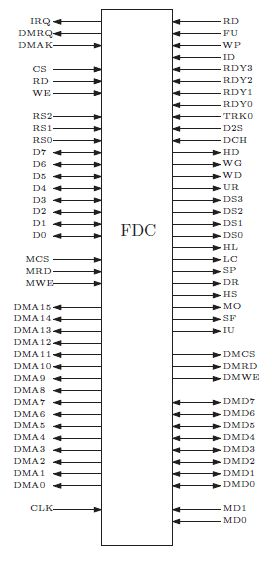 |
FDC はCPU バスとFDD システムをインターフェースします、そのピンは 図14 のようなものがあります。
|
CPUインターフェース |
CPU からは6 個の8 ビットレジスタを持つ8 ビット デバイスとして機能します。 図16 を参照して下さい。 CPU と接続する信号は下記のものがあり、これらは概 ね 図15 のように接続します。
| 図15: CPUとの接続 |
|
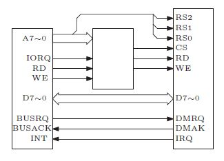 |
| 図16: レジスタ構成 |
|
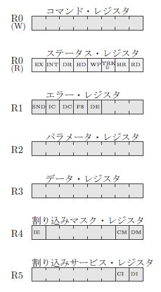 |
|
DMAインターフェース |
データ転送に外部のDMA コントローラなしでDMA 転送できます。メモリとは 図17 のように接続します。
| 図17: メモリとの接続1 |
|
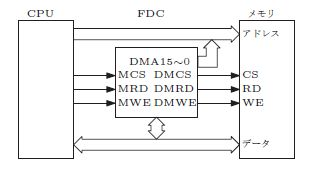 |
|
ローカルメモリ |
| 図18: メモリとの接続2 |
|
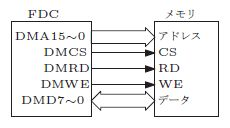 |
FDC に専用のメモリを持たせてディスクのデータ転 送をFDC が単独で行えるようにしたものです、 図18 の様になります。ローカルメモリのデータをCPU から 読み出す場合はFDC を経由して行います。ほとんどの 信号はDMAインターフェースと共用していますがデー タバスは専用の DMD7～0 を使います。
|
システム選択 |
| 図19: システム選択 |
|
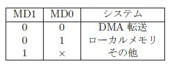 |
MD1,0 はFDCがディスクデータの転送で使用できる ハードウェアを明示する端子です。ディスクデータの転 送のハードウェアにはDMA とローカルメモリ(LMA) があります。 図19 を参照して下さい。システム選択に よって使用できるハードウェアがFDC の内部的にも決 まります、ハードウェアとシステム設定が合っていない とデータ転送ができません。DMA 転送はCPU のメモ リにデータを転送します、ローカルメモリはFDC が専 有するメモリにデータを転送します。システム選択は ハードウェアを使うデータ転送の選択肢を示すもので、 MD1,0 が「その他」の設定になっていたらDMAやロー カルメモリのハードウェアが存在しないことを示してい るだけです、システム選択がFDC の使用可能な機能を 制限することはありません。
|
プログラム転送 |
データ転送に特別のハードウェアを設けない方法で CPU が常にFDC のフラグを監視してデータのアクセ スをする転送です。
ポーリング転送にしておいてFDC の割り込みをイ ネーブルにすれば、フラグの変化で割り込みをかけられ ます、割り込み応答が十分に速いシステムでは実用にな ると思います。
|
FDDインターフェース |
FDD インターフェースは8 インチ、5 インチ、3.5 イ ンチの3 種類がありますが基本的に3.5 インチのFDD で使うものとします、設計上は対応していますが、8 イ ンチと5 インチについては現在、動作テストが出来ません。
| 図20: 3.5インチ |
|
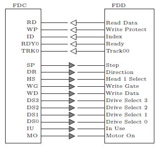 |
本稿で製作したロジックは、パソコン用のパーツとし て今でも簡単に入手できる3.5 インチドライブを自作の システムに使いたいと思ったことが発端です。 図20 のように接続します。
| 図21: 5.25インチ |
|
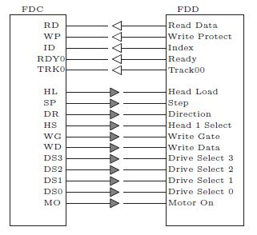 |
現在は使わなくなった古いパソコンに使われているド ライブです。ディスクも市販されていませんが、 図21 のように接続します。
| 図22: 8インチ |
|
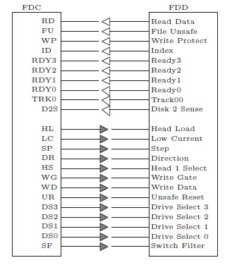 |
私は使ったことはあるのですが、個人ではドライブ もディスクも持っていないので動作テストはできません が、 図22 のように接続します。
本章では、各ドライブとのインターフェースについて の詳細な説明は行いませんが、概要については表形式に してまとめてみました。FDD を3.5 インチ専用にする 場合に必要のない信号ピンもありますので 図23 を参照 して下さい。FDC の信号名との対応は 図24 を参照し て下さい。この 図24 の8 とはYED インターフェースです、 5.25 は2D/2DD/2HD タイプ共通ですが2DD/2HD の FDD では4 番ピンを In Use と Head Load の切り替え で選択します。
| 図23: FDD の信号 |
|
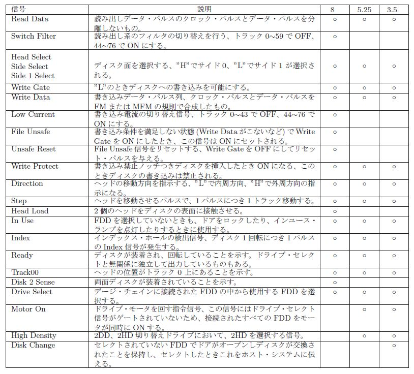 |
| 図24: FDD とFDC の信号対応とピン番号 |
|
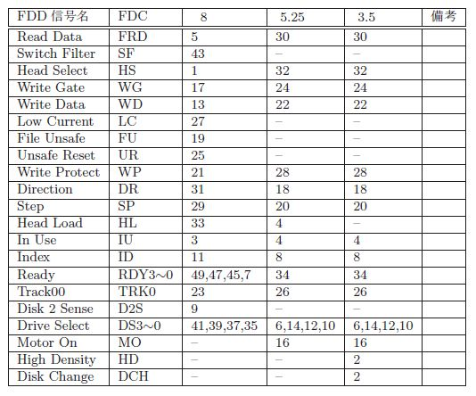 |
|
ソフトウェアインターフェース |
| 図25: レジスタ選択 |
|
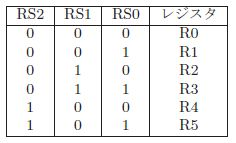 |
CPU のプログラムからは、本FDC は 図16 のよう に6個の8 ビットレジスタに見えます。レジスタの選択は 図25 を参照して下さい。
|
コマンドレジスタ |
FDC に命令を与えるレジスタです、命令の内容につ いては 「命令セット」 を参照して下さい。
|
ステータスレジスタ |
| 図26: ステータスレジスタのビット |
|
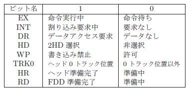 |
FDC の状態を示すレジスタです。 図26 を参照して下さい。
HR、RD ビットはFDD の状態を知る重要なビットです がFDC の動作を抑制することはありません。命令群Ⅱ の命令発行は、これらのビットが1 になるのを待ってか ら行われるべきですが、プログラムによって制御して下 さい。
|
エラーレジスタ |
| 図27: エラーレジスタのビット |
|
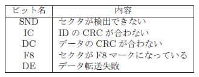 |
図27 を参照して下さい。ビットが1 のとき該当する エラーが発生しています。ビットのリセットは命令によ り行います、このとき全てのビットがリセットされます。
|
パラメータレジスタ |
FDC に与える命令にパラメータが伴う場合に、その 命令に先んじてパラメータを設定しておくレジスタで す。あるいはFDC の内部値の読み出しに使います。
|
データレジスタ |
ディスクから読み出されたデータが格納されるか、ま たは書き込むデータを格納するレジスタです。ステータ スレジスタの DR ビットが関連しています。
|
割り込みマスクレジスタ |
| 図28: 割り込みマスクレジスタのビット |
|
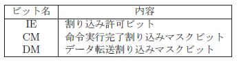 |
図28 を参照して下さい。 IE はFDC の割り込み要 求許可を決定するビットです、1 でイネーブル、0 でディ セーブルと認識されます。それ以外のビットはそれぞれ の割り込み発生源ごとの許可ビットです、1 でマスク、0 で非マスクと認識されます。
|
割り込みサービスレジスタ |
| 図29: 割り込みサービスレジスタのビット |
|
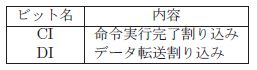 |
図29 を参照して下さい。割り込み発生をしたところ が1 になります、それ以外は0 です。このレジスタの任 意のビットを1 にした書き込みを行うことで、そのビッ トの割り込み要求を初期化します。
|
命令セット |
| 図30: 命令群Ⅰ |
|
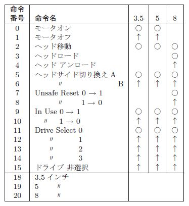 |
FDC の命令はコマンドレジスタR0 とパラメータレ ジスタR2 で発行します、その種類は 図30 、 図31 、 図32 のとおりです。命令の大まかな分類はⅠ～Ⅷになります。
| 図31: 命令群Ⅱ～Ⅶ |
|
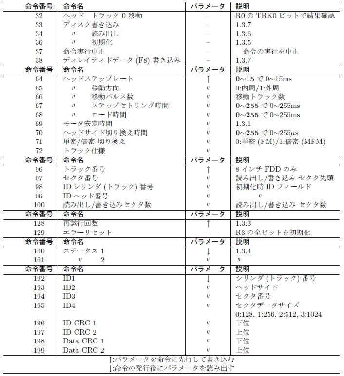 |
| 図32: 命令群Ⅷ |
|
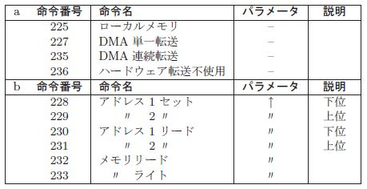 |
Ⅰ FDD インタフェースコネクタにある信号を操作する 命令群です。ディスク装置と使う命令の関係を○で 表記しました、同じ項目について複数の命令で選択 する場合は同属の命令を↑で表記してあります。
Ⅱ 本群の命令はFDC がFDD に対して複雑な動作を 実行することを指示するものです、また割り込みや DMA 動作などのデータ転送も行われます。本群の命令 が実行中であることはステータスレジスタの EX に示されます。
| 図33: FDD 規格値設定操作 |
|
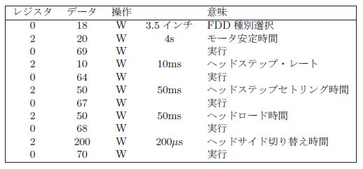 |
Ⅲ FDD の規格値やディスクの仕様をFDC に設定する 命令群です。数値は本命令の発行の前にパラメータ レジスタに書き込んでおきます。3.5 インチドライ ブを例として 図33 の手順になります、FDC の初 期化後に1 回だけ設定します。ディスクの初期化や 読み出し、書き込みの前には必ず確定させておき ます。
Ⅳ ディスクの読み書きする位置を指定する命令群です。 位置は本命令の発行の前にパラメータレジスタに 書き込んでおきます。
Ⅴ エラー処理に関する命令群です。数値は本命令の発行 の前にパラメータレジスタに書き込んでおきます。
Ⅵ FDD の状態を読み出す命令群です。FDD の状態は 本命令の発行後にパラメータレジスタから読み出 します。
Ⅶ セクタのID やCRC を読み出す命令群です。ID や CRC の値は本命令の発行後にパラメータレジスタ から読み出します。
| 図34: システム設定 |
|
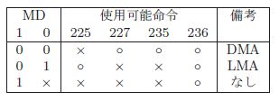 |
Ⅷ システム設定に関する命令群です。 b はパラメータ レジスタを使用する命令です。システム設定は主に データ転送の方法に関する設定です、ハードウェア に依存する方法と依存しない方法がありますが、依 存する方法は MD1 、 MD0 の端子の設定で選択可 能な場合と不可能な場合があります。どちらの方法 も 図34 の組み合わせで可能であればコマンドレ ジスタへの命令発行で有効になります。
|
モータ安定時間 |
モータの回転指令を発してから安定するまでの時間を 回転数で定義します。0～255 の設定が可能です、300rpm の回転数で255 を設定した場合に約50 秒になります。 モータ起動時間は0.5～2.0 秒程度の値です。
|
ヘッド操作 |
| 図35: ヘッド操作 |
|
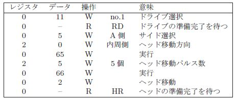 |
図35 を参照して下さい。
|
再試行回数 |
ディスクの読み出し・書き込みでセクタ等のトラッ ク上の位置を探索しますが、見つけられなかった場合に は機械的インデックスが通過します。再探索の上限を機 械的インデックスの通過個数で設定します。
|
FDDステータスリード |
FDD の信号を読み出しますが命令の発行後にパラ メータレジスタに 図36 の様に置かれます。
| 図36: FDD ステータス |
|
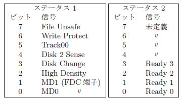 |
|
ディスク初期化 |
ディスクの初期化はトラック単位で行います、ディス ク全体を初期化するには1.44MB で80 シリンダの両面 (×2)160 トラックを初期化するために、ヘッドを80 箇所 移動して、2 回ずつ命令を発行します。書き込み方式に はFM 方式とMFM 方式があり 図37 の仕様になって います。3.5 インチドライブに1.44MB ディスクを対象 とした目的トラック移動後の操作を 図38 に示します。
| 図37: トラック仕様 |
|
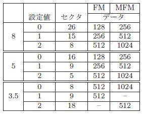 |
| 図38: ディスク初期化操作 |
|
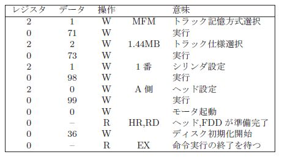 |
|
ディスク読み出し |
ディスクの読み出しはセクタ単位で行います。まず、 目的のセクタのあるトラックにヘッドを位置させます、 この後に命令を発行します。 図39 の様な手順です。
| 図39: ディスク読み出し操作 |
|
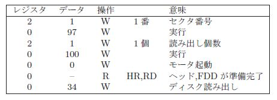 |
|
ディスク書き込み |
ディスクの書き込みもセクタ単位で行います。手順 も「ディスク読み出し」と変わらず 図40 の様になり ます。セクタのデータが無効にされたことを示すデータ マークF8 を書き込む場合も同手順です。
| 図40: ディスク書き込み操作 |
|
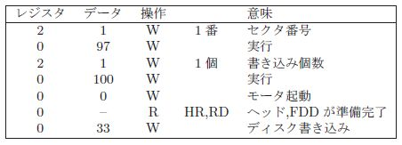 |
|
命令の使い方 |
|
初期設定 |
最初に発行する命令はFDD の規格値をFDC に設定 する為のものです、命令群Ⅲにあります。また3.5/5/8 インチのドライブの種類の中から選択する命令が命令群 Ⅰの後部にあります。次にディスクデータの転送方法に ついての設定が必要です、命令群Ⅷ a にあります。
|
機械的操作 |
ディスクの初期化や読み出しや書き込みでは準備段階 でFDD の選択やモータやヘッドの操作を行います、こ れらは命令群Ⅰにあります。またFDD の機械的な状態 を読み出す命令などは命令群Ⅵにあります。
|
セクタ情報 |
ディスクの読み出しや書き込みではセクタのID フィー ルドを読み出して、目的セクタとの照合を行っています。 これらはFDC の機能で使用者が感知する必要はありま せんが、命令群Ⅶで直近のセクタ情報が読み取れます。
|
ディスク初期化 |
本節の「初期設定」が既に設定されていれば、ヘッド を目的トラックに移動させて、モータを起動します。初 期化のパラメータにはID フィールドに書き込むトラッ ク番号とヘッド番号(サイド) が必要です、他のパラメー タはFDC が自動生成します。この後にFDD が機械的 安定になるステータスレジスタR0 の HR 、 RD ビット が 0 になるのを待ってディスク初期化命令を発行しま す。初期化命令の完了はステータスレジスタR0 の EX ビットが1→0 になったときです。
|
命令群Ⅱ |
本群の命令実行中はステータスレジスタR0 の EX ビットが 1 になっています。本命令群の実行完了に限って割 り込みを発生させることができます、割り込みサービス レジスタR5 の CI が 1 になります。また本命令群の実 行を中断させる命令が本群中にあります。
|
ディスク書き込み・読み出し |
手順はディスク初期化とほぼ同じです、必要なパラ メータはセクタの番号と個数です、命令群Ⅳにありま す。初期化と異なる点は時々刻々のデータ転送があるこ とですが次節で述べます。
|
データ転送 |
|
ポーリング転送 |
FDC のハードウェアがいかなる構成になっている場 合にでも使える方法です。FDC の割り込みは使わない 前提なので割り込みマスクレジスタR4 の IE ビットは 0 にします。
ステータスレジスタR0 の DR ビットを監視して 0→1 になったらディスクデータをデータレジスタR3 から読 み出します、次にエラーレジスタR1 の DE ビットが 0 ならデータは正常と見なして次のデータの読み出しに 備えてステータスレジスタR0 の監視を続けます。 DE ビットが 1 なら、データを読み出す前に次のデータが上 書きされて、読み出せなかったデータがあることを示し ます。 DE ビットの初期化は命令により行います、 DR ビットは割り込みサービスレジスタR5 の DI ビットへ 1 を書き込む事で 1→0 になります。最後はステータス レジスタR0 の EX が 1→0 になったら命令が完了した ことを示して終わりです。
ディスク書き込み命令の発行後のデータマーク(FB) のディスク書き込み後に DR ビットが 0→1 になります。 1 番目のデータについては命令発行前か発行直後に DR ビットとは無関係にデータレジスタR3 に書き込んでお いて、2 番目以降はステータスレジスタR0 の DR ビットを監視してデータを書き込む手順とします。データの 書き込み後は割り込みサービスレジスタR5 の DI ビットへ 1 を書き込んでステータスレジスタの DR ビットを 1→0 にします。これを1 セクタのデータ個数分繰り返 します、最後は「読み出し」と同じです。
|
割り込み転送 |
FDC の割り込み端子がCPU システムに接続されて いれば使える方法です。手順はポーリングとほぼ同じで すが通常割り込み処理プログラム中に置かれると思いま す。割り込みマスクレジスタR4 の IE ビットは 1 にして割り込み要求可能にします、 DM ビットを 0 にしてマスクを解除します。
ディスクデータがデータレジスタR3 に置かれると割 り込みサービスレジスタR5 の DI が 0→1 になり割り 込みが要求されます、ステータスレジスタR0 の監視は 不用です。割り込みの解除は割り込みサービスレジスタR5 の DI ビットへ 1 を書き込むことで行います。
書き込みデータ必要になると「読み出し」と同様に割 り込みが要求されます。ステータスレジスタR0 の監視 は不用です、割り込み要求の解除は「読み出し」と同じ です。
|
DMA転送 |
CPU バス上のメモリをディスクデータの転送の対象 にします。DMA の設定は「ディスク読み出し」、「ディ スク書き込み」命令の前に命令群Ⅷ b の命令で 図41 の様に設定しておきます、DMA 開始アドレスは1234h です。なおDMA 開始アドレスの設定はDMA 転送の選 択の前に行います、選択後はDMA 開始アドレスの設定 は保護の目的で無効にされます。「ディスク読み出し」、 「ディスク書き込み」の命令発行の後は命令実行の完了 までプログラムの介在するところはありません。DMA の方法はバイトデータごとにDMA要求と解放を行う単 一転送と1 回のDMA要求で命令実行の完了まで解放し ない連続転送があります。
| 図41: DMA 設定操作 |
|
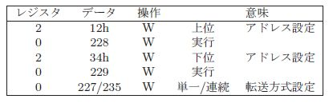 |
|
ローカルメモリ転送 |
FDC の持つCPU システムとは独立したメモリにディ スクデータを転送します。ハードウェアは本FDC の機 能に特化した形態を取っています。LMAの設定はDMA 設定とほぼ同じで命令群Ⅷ b の命令で 図42 の様に設定しておきます。本転送の選択後はDMA と同様にアド レスが保護されます。CPU がローカルメモリを読み書 きする際にも命令群Ⅷ b の命令を使います。 図43 はアドレス1234h に55h に書き込んで、同アドレスから 読み出す操作です。ローカルメモリのアドレスを読み出 すこともできます。
| 図42: LMA 設定操作 |
|
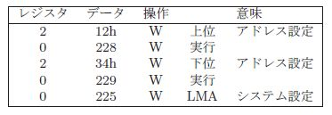 |
| 図43: ローカルメモリ操作 |
|
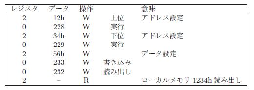 |